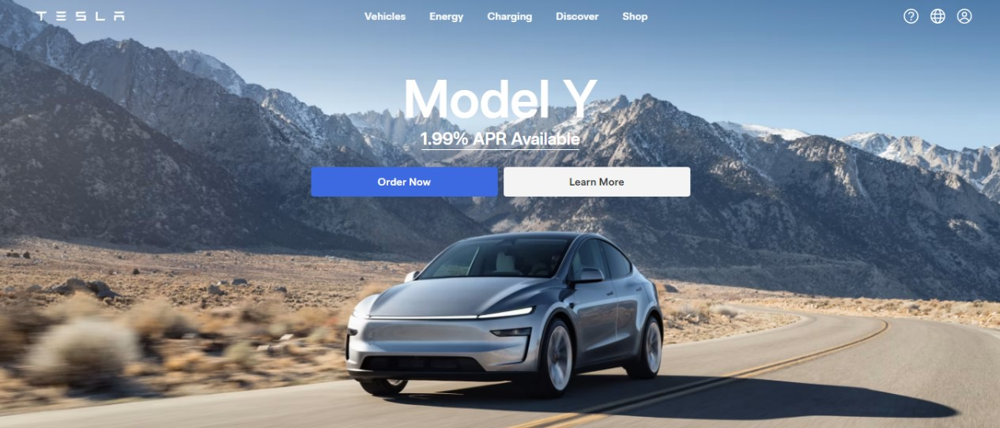

5 Tips Desain Web Modern untuk Pemula
Desain web modern tidak hanya tentang estetika, tetapi juga tentang fungsionalitas. Berikut adalah 5 tips yang bisa kamu terapkan:
-
Gunakan Desain Responsif
Pastikan website-mu bisa diakses dengan baik di semua perangkat, termasuk desktop, tablet, dan smartphone. Gunakan media query dalam CSS untuk menyesuaikan layout.
-
Pilih Warna yang Harmonis
Gunakan palet warna yang sesuai dengan branding atau tema situsmu. Hindari penggunaan terlalu banyak warna agar tampilan tetap bersih.
-
Fokus pada Kecepatan
Optimalkan gambar, minimalkan kode JavaScript, dan gunakan hosting yang cepat. Website yang lambat bisa membuat pengunjung pergi.
-
Beri Ruang Kosong (Whitespace)
Desain yang bersih dengan ruang kosong memudahkan pembaca untuk fokus pada konten utama.
-
Tambahkan Animasi Kecil
Animasi seperti hover effect atau transisi halus bisa meningkatkan interaksi pengguna tanpa mengganggu.